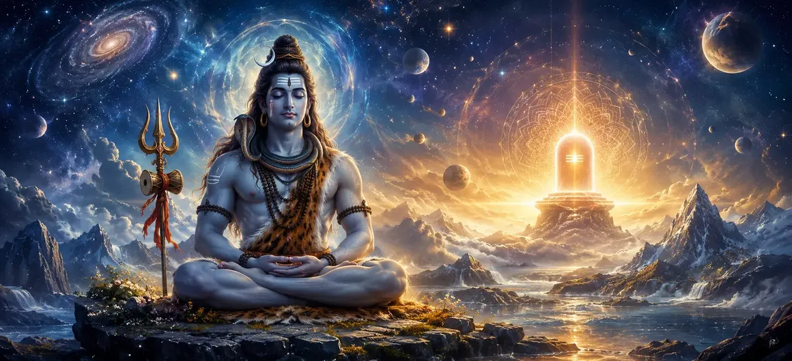

शिव का सिद्धांत
वायवीय संहिता का तीसवां अध्याय परम आध्यात्मिक वास्तविकता और सर्वोच्च चेतना का खुलासा करता है जिसे शिव तत्व के रूप में जाना जाता है।
ऋषि वायु बताते हैं कि कैसे भगवान शिव संपूर्ण ब्रह्मांड के मूलभूत सत्य, अव्यक्त स्रोत और शाश्वत पालनकर्ता हैं।
यह अध्याय साधकों को दिव्य एकता की उच्चतम अनुभूति और नश्वर बंधन से मुक्ति की ओर मार्गदर्शन करता है।
अध्याय 30 की मुख्य बातें
शिव तत्व
समस्त अस्तित्व के अंतर्निहित सर्वोच्च पारलौकिक सिद्धांत की जाँच करता है।
अनंत चेतना
भगवान शिव को शुद्ध, अपरिवर्तनीय और सर्वव्यापी जागरूकता के रूप में प्रकट करता है।
कॉस्मिक फ़ाउंडेशन
यह दर्शाता है कि सृजन, संरक्षण और प्रलय कैसे शिव में निहित हैं।
परम मुक्ति
साधकों को परमात्मा के साथ अपनी पहचान का एहसास कराने की दिशा में मार्गदर्शन करता है।
भ्रम से परे
शाश्वत आध्यात्मिक सत्य को प्रकट करने के लिए सांसारिक माया को पार करें।
कथा प्रवाह
पूर्ण ज्ञान में निर्देश को कवर करते हुए अध्याय 31 में आसानी से आगे बढ़ता है।
इस अध्याय में मुख्य विषय
परम शिव तत्व की प्रकृति
ऋषि वायु बताते हैं कि शिव तत्व समय, स्थान और विशेषताओं से परे है, जो शुद्ध अनंत जागरूकता का प्रतिनिधित्व करता है।
वह सभी ब्रह्मांडीय गतिविधियों का उनसे कलंकित हुए बिना अंतिम गवाह है।
अव्यक्त और प्रकट वास्तविकताएँ
पाठ बताता है कि कैसे भगवान शिव अपने अव्यक्त पारलौकिक रूप और जीवंत प्रकट ब्रह्मांड के रूप में एक साथ मौजूद हैं।
सभी दृश्यमान रूप उसी से प्रकट होते हैं और अंततः शांतिपूर्वक उसी में विश्राम करते हैं।
चेतना और पदार्थ की परस्पर क्रिया
शिव शुद्ध चेतना (पुरुष) का प्रतिनिधित्व करते हैं, जबकि उनकी दिव्य ऊर्जा (शक्ति) पदार्थ (प्रकृति) की अभिव्यक्ति का संचालन करती है।
साथ में, उनका शाश्वत मिलन संपूर्ण ब्रह्मांड को जीवंत बनाता है।
शिव ही एकमात्र उद्गम और आश्रय हैं
ऋषि वायु इस बात पर जोर देते हैं कि संपूर्ण सृष्टि में भगवान शिव से बढ़कर कोई सत्य या आश्रय नहीं है।
जो लोग शिव सिद्धांत की शरण लेते हैं वे जन्म और मृत्यु के चक्र से पार हो जाते हैं।
सच्चे स्व का बोध
शिव सिद्धांत को समझने का अर्थ है यह पहचानना कि व्यक्तिगत आत्मा (जीव) मौलिक रूप से सर्वोच्च चेतना से अलग नहीं है।
यह सर्वोच्च अनुभूति परम शांति और मुक्ति लाती है।
शिव तत्व प्रवचन का समापन
अध्याय 30 सर्वोच्च शिव तत्व पर विचार करने के लिए समर्पित लोगों की गहन प्रशंसा के साथ समाप्त होता है।
ऋषि वायु दर्शकों को पूर्ण आध्यात्मिक ज्ञान पर अंतिम निर्देशों के लिए तैयार करते हैं।
अध्याय 31 की ओर
शिव सिद्धांत पर इस व्याख्या के बाद, ऋषि वायु अध्याय 31, 'पूर्ण बुद्धि में निर्देश' सुनाने की तैयारी करते हैं।
अगला अध्याय आत्मज्ञान के संबंध में वायवीय संहिता की प्रमुख शिक्षाओं को प्रस्तुत करता है।
अध्याय 30 की मुख्य शिक्षाएँ
सर्वोच्च वास्तविकता
शिव तत्व सभी घटनाओं से परे परम सत्य है।
ब्रह्मांडीय स्रोत
सारी सृष्टि भगवान शिव से उत्पन्न होती है और उन्हीं में विलीन हो जाती है।
शुद्ध जागरूकता
अपरिवर्तनीय चेतना का प्रतीक है जो सभी परिवर्तनों का गवाह है।
आत्मा एकता
व्यक्तिगत जागरूकता को सार्वभौमिक दिव्य भावना के साथ जोड़ता है।
भय से मुक्ति
शाश्वत सत्य की प्राप्ति के माध्यम से नश्वरता को पार करता है।
अगले चरण
सीधे अध्याय 31 की ज्ञान शिक्षाओं की ओर ले जाता है।
आध्यात्मिक चिंतन
भीतर के शिव सिद्धांत को पहचानने से साधक और परमात्मा के बीच की सभी सीमाएं समाप्त हो जाती हैं, जिससे पता चलता है कि अनंत शांति ही हमारा सच्चा शाश्वत स्वभाव है।
अध्याय 30 का संदेश जीना
भगवान शिव की निराकार, अनंत चेतना का प्रतिदिन ध्यान करें।
अपने मन को क्षणिक सांसारिक भ्रमों के बजाय शाश्वत वास्तविकता में स्थापित करें।
प्रत्येक जीवित प्राणी को सर्वोच्च शिव तत्व की अभिव्यक्ति के रूप में देखें।
प्रमुख आध्यात्मिक अवधारणाएँ
शिव सिद्धांत की दार्शनिक परिभाषा.
भगवान शिव निर्गुण सर्वोच्च वास्तविकता के रूप में।
चेतना और पदार्थ का सामंजस्यपूर्ण मिलन.
आत्मा और शिव के बीच अलगाव के भ्रम की समाप्ति।
परम आध्यात्मिक सत्य का प्रत्यक्ष दर्शन.
अध्याय 31 में ज्ञान निर्देश की प्रस्तावना.
अध्याय सारांश
वायवीय संहिता अध्याय 30 शिव के सिद्धांत को प्रस्तुत करता है। सर्वोच्च शिव तत्व, अव्यक्त वास्तविकता, चेतना और पदार्थ और परम आत्म-बोध की खोज करते हुए, यह अध्याय अस्तित्व के मूलभूत सत्य का खुलासा करता है। यह अध्याय 31, 'पूर्ण बुद्धि में निर्देश' के लिए मार्ग प्रशस्त करता है।
अक्सर पूछे जाने वाले प्रश्न
1. वायवीय संहिता अध्याय 30 का प्राथमिक विषय क्या है?
अध्याय 30 शिव के सर्वोच्च सिद्धांत (शिव तत्व) की खोज करता है, जिसमें संपूर्ण सृष्टि के अंतर्निहित अंतिम वास्तविकता के रूप में उनकी पारलौकिक प्रकृति का विवरण दिया गया है।
2. शिव पुराण के सन्दर्भ में शिव तत्व का वर्णन किस प्रकार किया गया है?
शिव तत्व को निराकार, अनंत, अपरिवर्तनीय और सभी ब्रह्मांडीय चेतना और अस्तित्व का स्रोत बताया गया है।
3. साधकों के लिए शिवतत्त्व को समझना क्यों आवश्यक है?
यह यह बताकर आत्मा को सांसारिक भ्रम से मुक्त करता है कि असली पहचान सर्वोच्च दिव्य चेतना के साथ है।
4. वायवीय संहिता में इस सर्वोच्च शिक्षा की व्याख्या कौन करता है?
ऋषि वायु एकत्रित ऋषियों को भगवान शिव के संबंध में ये उच्चतम आध्यात्मिक सत्य प्रदान करते हैं।
5. अध्याय 30 के बाद नेविगेशन के लिए अगला अध्याय कौन सा है?
नेविगेशन के लिए अगले अध्याय का शीर्षक 'पूर्ण बुद्धि में निर्देश' है।
"जब व्यक्तित्व का भ्रम शिव तत्व के प्रकाश में विलीन हो जाता है, तो जो बचता है वह शुद्ध चेतना का अनंत, शाश्वत सागर है।"
वायवीय संहिता के माध्यम से जारी रखें
अध्याय 30 शिव के सिद्धांत का समापन करता है। उत्तम बुद्धि का निर्देश देना जारी रखें।